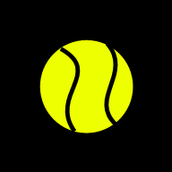

Tennis SillaCoach
Instalar en Android
PARTIDO
DESCANSO
Antes de jugar
Tu edad
Edad del rival
Lateralidad del rival
Desconocida
Diestro
Zurdo
Objetivos del día · hasta dos
Asegurar el primer saque
Jugar con margen
Elegir mejor cuándo subir a la red
INICIAR PARTIDO
INICIAR DESCANSO
−
+
ESTOY EN TIE-BREAK
SIGUIENTE: SENSACIONES
FINALIZAR PARTIDO
PAUSA Y RESPIRA
SALTAR
¿Cómo vas?
Confianza
Omitir
Baja
Media
Alta
Fatiga
Omitir
Baja
Media
Alta
Agregar una observación
Jugador
Yo
Rival
Golpe
Saque
Golpes ganadores
Red
Revés
Paralelo
Cómo está funcionando
Sin observar
Consistente
Inconsistente
Ganando puntos
Fallando
Lado de origen mirando la red
Sin indicar
Izquierda
Derecha
VER CONSIGNA
VOLVER AL MARCADOR
Próximos dos games
VOLVER AL MARCADOR
Finalizar partido
Resultado
Sin indicar
Ganado
Perdido
Inconcluso
CONFIRMAR Y VER INFORME
VOLVER AL MARCADOR
Informe del partido
VOLVER AL INICIO